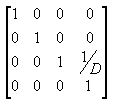
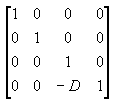
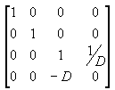
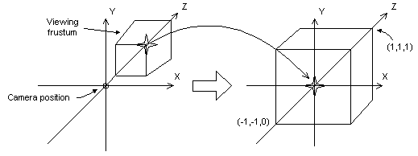
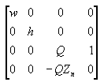
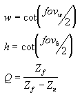
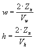
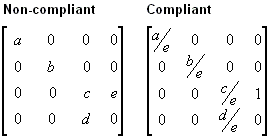

You can think of the projection transformation as controlling the camera's internals; it is analogous to choosing a lens for the camera. This is the most complicated of the three transformation types. This discussion of the projection transformation is organized into the following topics.
The projection matrix is typically a scale and perspective projection. The projection transformation converts the viewing frustum into a cuboid shape. Because the near end of the viewing frustum is smaller than the far end, this has the effect of expanding objects that are near to the camera; this is how perspective is applied to the scene.
In the viewing frustum, the distance between the camera and the origin of the viewing transform space is defined arbitrarily as D, so the projection matrix looks like the following illustration.

The viewing matrix translates the camera to the origin by translating in the z direction by - D. The translation matrix is like the following illustration.

Multiplying the translation matrix by the projection matrix (T*P) gives the composite projection matrix, as shown in the following illustration.

The perspective transform converts a viewing frustum into a new coordinate space. Notice that the frustum becomes cuboid and also that the origin moves from the upper-right corner of the scene to the center, as shown in the following diagram.

In the perspective transform, the limits of the x- and y-directions are -1 and 1. The limits of the z-direction are 0 for the front plane and 1 for the back plane.
This matrix translates and scales objects based on a specified distance from the camera to the near clipping plane, but it doesn't consider the field of view (fov), and the z-values that it produces for objects in the distance can be nearly identical, making depth comparisons difficult. The following matrix addresses these issues, and it adjusts vertices to account for the aspect ratio of the viewport, making it a good choice for the perspective projection.

In this matrix, Zâ‚™ is the z-value of the near clipping plane. The variables w, h, and Q have the following meanings. Note that fovw and fovâ‚– represent the viewport's horizontal and vertical fields of view, in radians.

For your application, using field-of-view angles to define the x- and y-scaling coefficients might not be as convenient as using the viewport's horizontal and vertical dimensions (in camera space). As the math works out, the following two equations for w and h use the viewport's dimensions, and are equivalent to the preceding equations.

In these formulas, Zâ‚™ represents the position of the near clipping plane, and the Vw and Vâ‚• variables represent the width and height of the viewport, in camera space.
For a C++ application, these two dimensions correspond directly to the Width and Height members of the D3DVIEWPORT9 structure.
Whatever formula you decide to use, be sure to set Zâ‚™ to as large a value as possible, because z-values extremely close to the camera don't vary by much. This makes depth comparisons using 16-bit z-buffers somewhat complicated.
As with the world and view transformations, you call the IDirect3DDevice9::SetTransform method to set the projection transform.
The following ProjectionMatrix sample function sets the front and back clipping planes, as well as the horizontal and vertical field of view angles. The fields of view should be less than pi radians.
D3DXMATRIX
ProjectionMatrix(const float near_plane, // Distance to near clipping
// plane
const float far_plane, // Distance to far clipping
// plane
const float fov_horiz, // Horizontal field of view
// angle, in radians
const float fov_vert) // Vertical field of view
// angle, in radians
{
float h, w, Q;
w = (float)1/tan(fov_horiz*0.5); // 1/tan(x) == cot(x)
h = (float)1/tan(fov_vert*0.5); // 1/tan(x) == cot(x)
Q = far_plane/(far_plane - near_plane);
D3DXMATRIX ret;
ZeroMemory(&ret, sizeof(ret));
ret(0, 0) = w;
ret(1, 1) = h;
ret(2, 2) = Q;
ret(3, 2) = -Q*near_plane;
ret(2, 3) = 1;
return ret;
} // End of ProjectionMatrix
After creating the matrix, set it with IDirect3DDevice9::SetTransform specifying D3DTS_PROJECTION.
The D3DX utility library provides the following functions to help you set up your projection matrix.
Direct3D can use the w-component of a vertex that has been transformed by the world, view, and projection matrices to perform depth-based calculations in depth-buffer or fog effects. Computations such as these require that your projection matrix normalize w to be equivalent to world-space z. In short, if your projection matrix includes a (3,4) coefficient that is not 1, you must scale all the coefficients by the inverse of the (3,4) coefficient to make a proper matrix. If you don't provide a compliant matrix, fog effects and depth buffering are not applied correctly.
The following illustration shows a noncompliant projection matrix, and the same matrix scaled so that eye-relative fog will be enabled.

In the preceding matrices, all variables are assumed to be nonzero. For more information about eye-relative fog, see Eye-Relative vs. Z-Based Depth. For information about w-based depth buffering, see Depth Buffers (Direct3D 9).
Direct3D uses the currently set projection matrix in its w-based depth calculations. As a result, applications must set a compliant projection matrix to receive the desired w-based features, even if they do not use Direct3D for transforms.
Â
Â